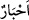
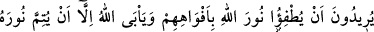
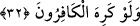

“Allah’ı bırakıp” yahudiler “bilginlerini” hristiyanlar ise “râhiplerini ve Meryem
oğlu Mesih’i rabler edindiler.” Yani, hristiyanlar Mesîh’e “Allah’ın oğludur.” dedikten
sonra onu rab edindiler. Allah böyle bir vasıftan çok yüce ve münezzehtir.
“Bilginler” anlamına gelen “__WORD__”, “__WORD__” kelimesinin çoğuludur. Sözlükte mürekkep
anlamındadır. Âlim çok yazı yazdığı için veya mânâları süsleyip güzelleştirdiği için ya
da güzel açıklama yaptığı için ona “hibr” denilmiştir. Bu kelime daha çok Hârun
neslinden gelen yahudi âlimleri için kullanılmıştır.
Râhib, kalbine korku ve haşyet yerleşmiş, haşyetin izleri yüzünde, dilinde ve
vücudunda tezahür etmiş kimse demektir. Bu kelime daha çok hristiyan âbidleri ve
onlardan manastır ehli olanlar için kullanılmıştır.
Ayetteki “rabler edindiler” ifâdesi, onları rabler gibi gördüler demektir. Burada
teşbih-i belîğ vardır. Yâni onlar âlimlerine ve âbidlerine; onların kendilerine emrettiği
konularda kölelerin efendilerine itaati gibi itaat ettiler. Allah’ın helal kıldığını haram
saydılar, haram kıldığını da helal saydılar. Bir hadiste şöyle buyurulmuştur: “Helali
haram sayan, haramı helal sayan gibidir.”[126] buyurulmuştur. Yani, helali haram
sayanın cezası, haramı helal sayanın cezası gibidir. Böyle bir hareket katıksız küfürdür.
Meselâ, sütün haram olduğuna inanan kimse, şarabın helal olduğuna inanan kimse gibi
olur. Koyun etinin haram olduğuna inanan kimse, domuz etinin helal olduğuna inanan
kimse gibidir.
“Oysa kendilerine” o kâfirlere Tevrat’ta, İncil’de ve aklın bir gereği olarak “yalnız
tek ilâha” şânı büyük Allah Teâlâ’ya “ibadet etmeleri” O’na itaatte bulunmaları,
O’nun emrine muhalif başkalarının emirlerine itaat etmemeleri “emredilmişti.” Çünkü
böyle bir davranış, Allah’a ibadete terstir. Bütün semâvî kitaplar bu konuda müttefiktir.
Peygamber’e ve Allah’ın itaat edilmesini istediği diğer kişilere itaat etmek ise aslında
Allah Teâlâ’ya itaat etmek demektir.
“O’ndan başka ilâh yoktur. O, onların” ibadet ve itaat konusunda kendisine “ortak
koştukları şeylerden münezzehtir.”
32. Allah’ın nurunu ağızlarıyla söndürmek istiyorlar. Halbuki kâfirler hoşlanmasa
da Allah, mutlaka nurunu tamamlamak ister, (bundan başka bir şeye râzı olmaz).
Ehl-i kitabın her ikisi de “Allah’ın nurunu ağızlarıyla söndürmek istiyorlar”. Yani,
Kur’an’ı reddediyorlar, onun sunduğu tevhid inancını, Allah’ın ortaklardan ve
çocuklardan münezzeh olduğu gerçeğini ve Kur’ân’ın getirdiği hükümleri yalanlıyorlar.
Kur’ân’ın helal ve haram saydığı şeylere karşı çıkıyorlar.
Âyetteki “ağızlarıyla” ifadesi, “ağızlarından çıkan bâtıl sözleriyle” demektir.